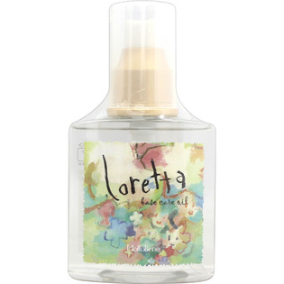

返回列表
产品名称：ロレッタ ベースケアオイル

モルトベーネ ロレッタ ベースケアオイル １２０ｍｌ
メーカー モルトベーネ
JANコード 4961503571809
商品の特徴
洗い流さないオイルトリートメントです。天然ローズの香りがほのかに広がり、サラツヤの髪に仕上げます。
成分・分量
シクロペンタシロキサン、ジメチコノール、パルミチン酸エチルヘキシル、安息香酸アルキル（C12-15）、ダマスクバラ花油、香料
用法及び用量
＜使用方法＞
タオルドライ後、適量を手のひらでのばし、毛先を中心に髪全体になじませ乾かします。
＜使用量の目安＞
ミディアムヘアで1プッシュ